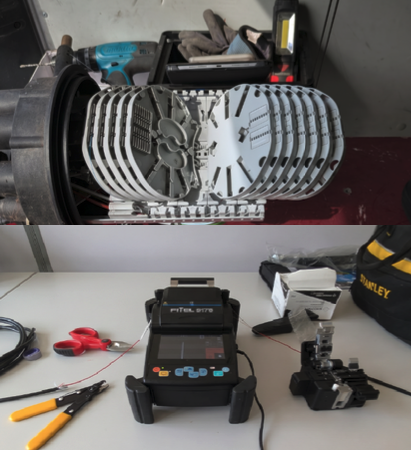

Durante il terzo anno ho avuto la possibilità di effetuate un periodo di tirocigno di 3 settimane presso l'azienda Mynet nella sede a Rovereto (TN). In questo breve periodo ho aiutato nei lavori esterni come soppraluogo e posa dei cavi in fibra ottica; e ho imparato ad utilizzare la giuntatrice.
SUCCESIVO